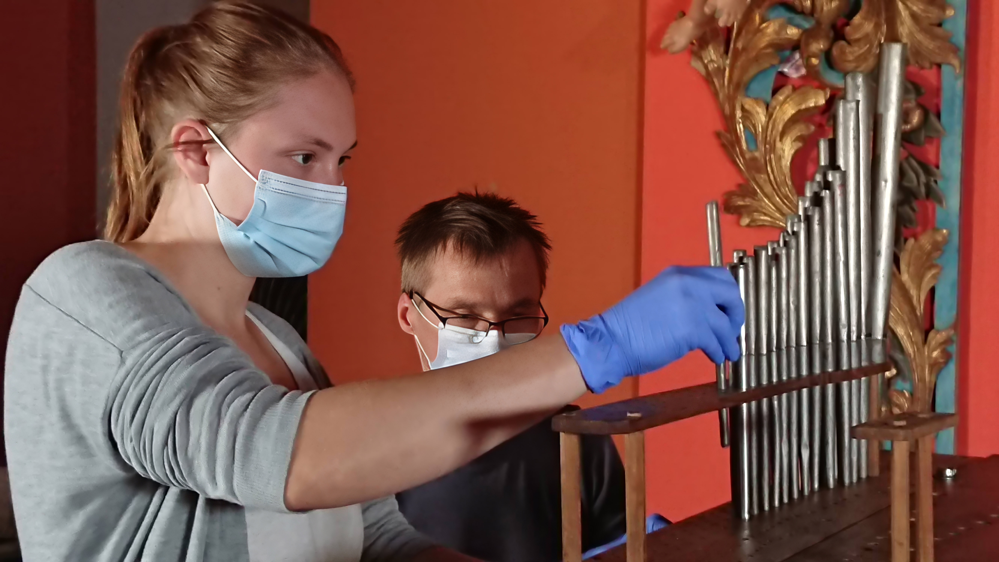

FREYA Restaurierung
Konservierung und Restaurierung von Kunst- und Kulturgut
Herzlich Willkommen bei FREYA Restaurierung
Kunstwerke zu erhalten, bedeutet, Erinnerungen zu bewahren und Geschichte sichtbar zu halten. Sie sind wertvolle Zeugnisse ihrer Zeit, welche im Umgang höchste Sorgfalt, Fachkenntnis sowie ein sensibles Vorgehen erfordern.
Als selbstständige Restauratorin widme ich mich der Konservierung und Restaurierung von Kunst- und Kulturgut. Meine Schwerpunkte liegen auf gefassten Skulpturen, Zierrahmen sowie Gemälden auf unterschiedlichen Bildträgern – darunter Tafel, Leinwand und Metall. Darüber hinaus arbeite ich an ausgewählten Instrumenten.
Gerne berate ich Sie individuell und entwickle gemeinsam mit Ihnen passende Lösungen für den Erhalt Ihrer Objekte.
Ich freue mich, Sie in meinem Atelier auf dem Kaßberg in Chemnitz begrüßen zu dürfen. Für größere oder ortsgebundene Werke komme ich selbstverständlich auch zu Ihnen.
Auf den folgenden Seiten finden Sie eine Übersicht der Leistungen, Wichtiges zur Arbeitsweise, die Vita sowie eine Galerie mit Referenzen.